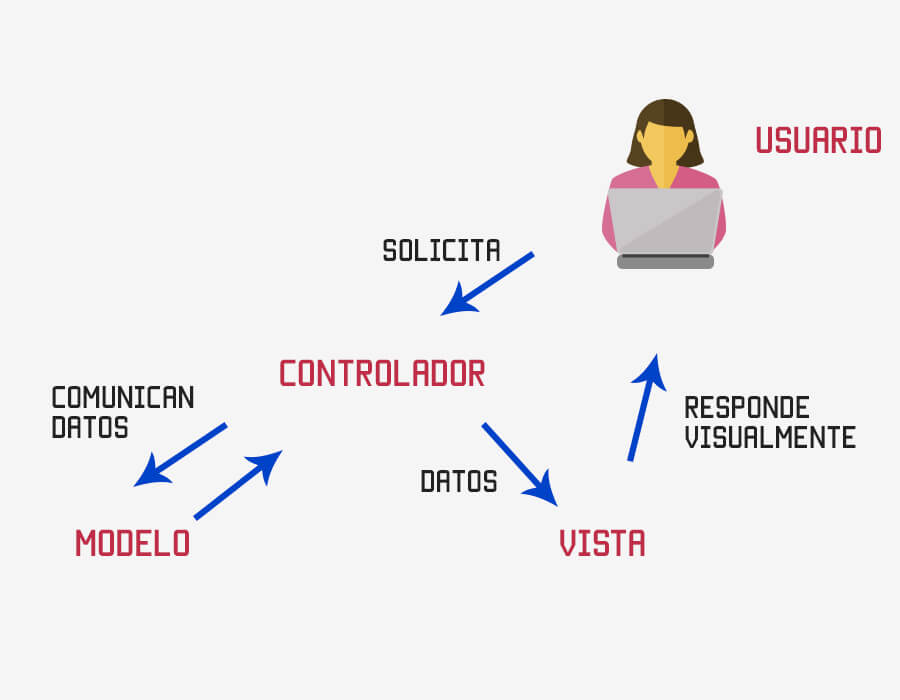

Conociendo Laravel¶
Arquitectura Laravel¶
Laravel utiliza una arquitectura basada en el patrón MVC (Modelo-Vista-Controlador), lo que permite una separación clara entre la lógica de negocio, la presentación y el control de las peticiones. El Modelo se encarga de la interacción con la base de datos mediante Eloquent, el ORM integrado de Laravel. La Vista representa la interfaz de usuario, generalmente utilizando el motor de plantillas Blade, que permite escribir HTML de forma limpia e incorporar lógica básica. El Controlador actúa como intermediario, gestionando las solicitudes HTTP, invocando los modelos necesarios y devolviendo las vistas correspondientes.
{kind=link}

Además de MVC, Laravel incorpora otros componentes clave en su arquitectura moderna. Utiliza un sistema de rutas muy flexible, que permite definir la lógica directamente o delegarla a controladores. Implementa inyección de dependencias, contenedor de servicios, middlewares para filtrar peticiones, y un sistema de migraciones para gestionar la estructura de la base de datos. Laravel también está diseñado para el desarrollo escalable, ofreciendo herramientas como colas, eventos, notificaciones, y una potente integración con APIs REST. Esta estructura modular, junto con el uso de componentes reutilizables, hace que Laravel sea ideal tanto para pequeños proyectos como para aplicaciones empresariales complejas.
Herramientas¶
Una vez que tenemos un entorno de desarrollo adecuado, el siguiente paso es iniciar nuestro proyecto. Para ello se nos plantean dos opciones:
Si ya se ha instalado previamente el instalador global de Laravel mediante Composer, se puede crear un nuevo proyecto ejecutando en la terminal el siguiente comando, desde el directorio en el que se quiera ubicar el proyecto:
laravel new nombre_proyecto
laravel, es posible que sea necesario añadir la ruta del ejecutable a la variable de entorno PATH:
C:\Users\tu_usuario\AppData\Roaming\Composer\vendor\bin
Este método es recomendable si se desea crear un proyecto con una versión concreta de Laravel o si el instalador no está funcionando correctamente. Se debe ejecutar:
composer create-project --prefer-dist laravel/laravel nombre_proyecto
Si se necesita una versión anterior, se puede especificar al final del comando:
composer create-project --prefer-dist laravel/laravel prueba 7.x
Uso de Artisan¶
Una vez creado el proyecto, Laravel incluye una herramienta de línea de comandos llamada Artisan. Esta no se utiliza para crear el proyecto, sino para trabajar con él posteriormente. Artisan permite generar controladores, ejecutar migraciones, lanzar el servidor de desarrollo y realizar múltiples tareas relacionadas con la gestión del proyecto.
Comandos básicos:
php artisan listphp artisan --version
Estos comandos se deben ejecutar desde la carpeta del proyecto.
Estándares¶
Es fundamental respetar de forma estricta la nomenclatura, las estructuras de carpetas y los nombres de archivos definidos a lo largo de todos los proyectos desarrollados en este módulo. Esta práctica no solo favorece la legibilidad y el mantenimiento del código, sino que también garantiza el correcto funcionamiento de frameworks como Laravel, que están diseñados siguiendo el principio de "Convención sobre configuración" (Convention over Configuration).
Este principio implica que, si se siguen las convenciones preestablecidas por el framework (por ejemplo, nombres de clases, ubicaciones de archivos o rutas de carpetas), Laravel puede interpretar y enlazar automáticamente distintos componentes del sistema (controladores, modelos, vistas, migraciones, etc.) sin necesidad de realizar configuraciones explícitas. Por el contrario, si se alteran estas convenciones, será necesario configurar manualmente aspectos que normalmente funcionarían de forma automática.
No seguir las convenciones puede derivar en errores difíciles de rastrear y una pérdida significativa de productividad. Por ello, es imprescindible que todo el desarrollo se ajuste a las pautas establecidas, tanto en los ejemplos de clase como en los trabajos individuales o en equipo.
Convenciones¶
Algunas de las principales convenciones en Laravel son:
Modelos¶
- Los nombres de los modelos deben ser iguales a los de las tablas de la base de datos, pero en singular, en CamelCase y con mayúscula inicial.
- Ejemplo:
RegisteredUser
Controladores¶
- Llámalos como los modelos, pero añadiendo la palabra
Controller. - Ejemplo:
RegisteredUserController
Métodos¶
- Se nombran en camelCase, empezando con minúscula.
- Ejemplo:
RegisteredUser::getAll()
Atributos¶
- Se nombran en snake_case, empezando con minúscula.
- Ejemplo:
RegisteredUser::first_name
Variables¶
- Los identificadores deben ir en camelCase, empezando con minúscula.
- En plural si se trata de una colección, y en singular si es un objeto individual o una variable simple.
- Ejemplos:
bannedUsers(colección),articleContent(objeto individual)
Tablas¶
- Se nombran en plural y en snake_case.
- Ejemplo:
registered_users
Columnas de las tablas¶
- Se nombran en snake_case, sin referencia al nombre de la tabla.
- Ejemplo:
first_name
Clave primaria¶
- Siempre debe llamarse
id. - Tipo:
integeryauto-increment. - No hay excepciones.
Claves ajenas¶
- Se forman con el nombre de la tabla ajena en singular seguido de
id. - Ejemplo:
article_id
Timestamps¶
- Laravel genera automáticamente campos de marca de tiempo.
- Se llaman siempre
created_atyupdated_at, de tipodatetime. - Deben estar en todas las tablas.
Tablas pivote¶
- Son tablas intermedias para relaciones N:N.
- Se nombran en snake_case, en plural, y en orden alfabético.
- Ejemplo:
articles_users(relación entrearticlesyusers)
Estructura de carpetas¶
{kind=link}
Después de una instalación limpia de Laravel, nos encontraremos con una estructura típica de directorios que hay que respetar. Los más importantes (al menos, para empezar) son estos:
Carpeta app¶
Cada vez que inicializamos un proyecto con Laravel, se crean una serie de carpetas y ficheros que son fundamentales para que nuestra aplicación, bajo este framework, funcione correctamente. Su conocimiento hará que nuestro desarrollo sea mucho más ágil y óptimo.
Es la que contiene una serie de archivos fundamentales para nuestro proyecto. Esta carpeta contiene tres subcarpetas:
Http: contiene los controladores.Models: contiene los modelos.Providers: contiene los proveedores de servicios que son necesarios para el correcto funcionamiento del framework.
Carpeta bootstrap¶
Aquí se ubica el fichero app.php que es uno de los primeros en cargarse tras el index.php. Además, contiene una carpeta de cachey el fichero providers.phpque es el que debemos modificar si generamos nuestros propios proveedores de servicios. Es una carpeta que por lo general no es necesario realizar muchos cambios en ella.
Carpeta config¶
En esta carpeta, encontramos todos los ficheros de configuración de nuestra aplicación como son:
app.php: lugar en el que se definen variables como el nombre de la app, si está en producción o no, si tiene el modo de depuración activo o la url de nuestra app. Es un fichero que hay que tener en cuenta para el correcto funcionamiento. Suelen ser las variables que tendremos en producción.auth.php: todo lo relacionado con la autenticación se encuentra aquí.database.php: todo lo relacionado con la base datos está en este fichero, como el tipo de base de datos que usa (por defecto es SQLite) o la conexión al servidor de base de datos.
Carpeta database¶
Lugar donde se almacenan las migraciones, seeders y factorías. Estos conceptos los veremos a lo largo de esta unidad y de la siguiente. Adicionalmente, si usásemos SQLite, es la carpeta donde se almacena.
Carpeta public¶
Es la única carpeta a la que se puede acceder desde el navegador. Contiene una serie de ficheros que te has trabajado en el módulo de Despliegue de Aplicaciones Web:
.htaccess: gestiona el acceso de las peticiones.index.php: primer fichero que se carga de nuestra aplicación.robots.txt: fichero con las directrices para los robots de los distintos buscadores.
Carpeta resource¶
Esta es nuestra carpeta de recursos donde guardaremos, separados en carpetas, los siguientes tipos de ficheros:
css: ficheros de hojas de estilos o CSSjs: ficheros de JavaScript.views: las vistas de nuestra aplicación.
Carpeta routes¶
En ella se albergan todas las rutas (redirecciones web) de nuestro proyecto. El fichero web.php es el que para cada ruta nos cargará una vista. Es una de las carpetas que veremos en profundidad en el siguiente apartado de la unidad de trabajo.
Carpeta storage¶
Carpeta que almacena registros y archivos generados por Laravel o nuestra app.
Carpeta test¶
Los test en PHPUnit estarán localizados en esta carpeta.
Carpeta vendor¶
Todas las dependencias de nuestro framework se ubican aquí. Es una carpeta que no deberíamos modificar o dejaremos de poder recibir actualizaciones de las versiones de Laravel de manera segura.
Otros ficheros¶
Fuera de estas carpetas se encuentran una serie de ficheros que es necesario conocer de su existencia para un mejor desarrollo:
.env: fichero de variables del entorno de desarrollo.compose.json: fichero con la configuración de la app que usa compose.readme.md: fichero que se carga en le repositorio a modo de descripción o de explicación de nuestro proyecto.vite.config.js: una de las grandes ventajas que nos permite Laravel es el uso de integraciones de node con PHP. Estas integraciones se hacen en este fichero.
Actividad¶
-
 AC 704. (RA7 / CE7a CE7h/ IC1 / 3p) - Crea los tres proyectos que usaremos a largo de la UT, con sus repositorios de control de versiones correspondientes. Su nombres serán:
AC 704. (RA7 / CE7a CE7h/ IC1 / 3p) - Crea los tres proyectos que usaremos a largo de la UT, con sus repositorios de control de versiones correspondientes. Su nombres serán:- to-do
- blog
- e-commerce
En el
README.mdde cada uno de ellos has de indicar donde crees que se encontrarán las diferentes partes de un proyecto MVC.